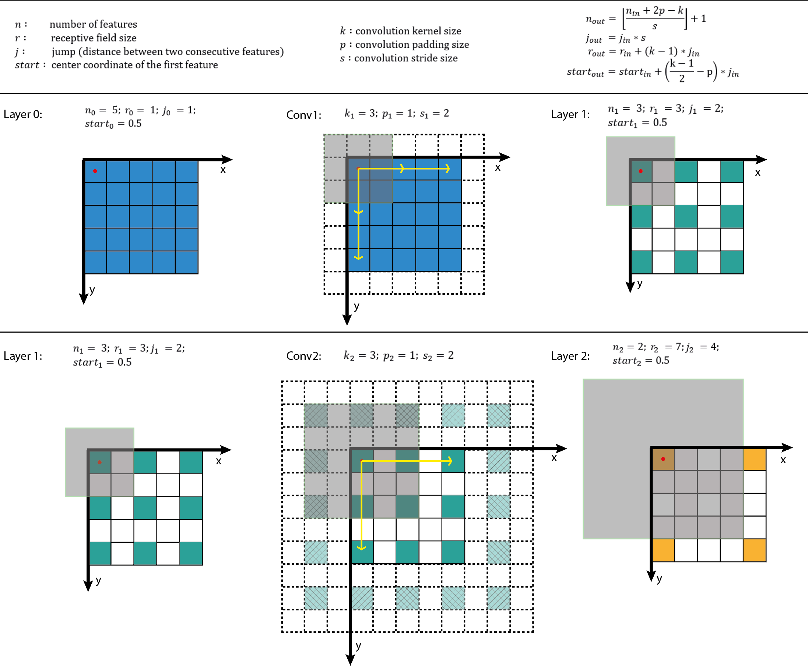
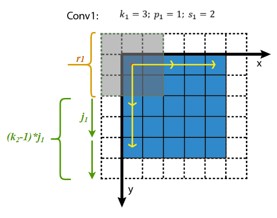
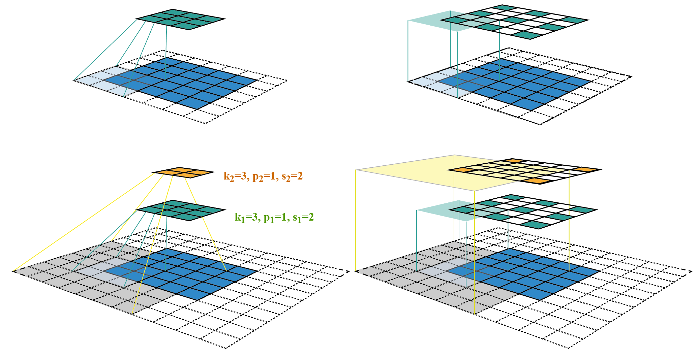
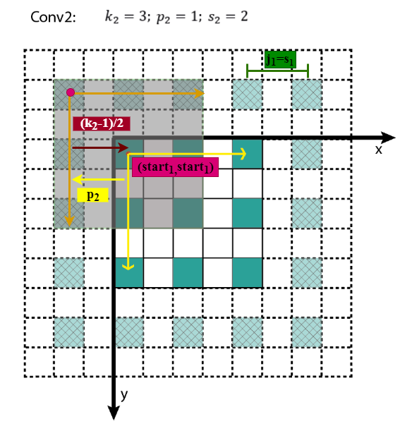

原文连接:https://www.cnblogs.com/shine-lee/p/12069176.html
什么是感受野
The receptive field is defined as the region in the input space that a particular CNN’s feature is looking at (i.e. be affected by).
—— A guide to receptive field arithmetic for Convolutional Neural Networks
感受野（Receptive Field），指的是神经网络中神经元“看到的”输入区域，在卷积神经网络中，feature map上某个元素的计算受输入图像上某个区域的影响，这个区域即该元素的感受野。
卷积神经网络中，越深层的神经元看到的输入区域越大，如下图所示，kernel size 均为\(3 \times 3\)，stride均为1，绿色标记的是\(Layer 2\) 每个神经元看到的区域，黄色标记的是\(Layer 3\) 看到的区域，具体地，\(Layer 2\)每个神经元可看到\(Layer 1\) 上 \(3 \times 3\) 大小的区域，\(Layer3\) 每个神经元看到\(Layer 2\) 上 \(3 \times 3\) 大小的区域，该区域可以又看到\(Layer 1\) 上 \(5 \times 5\) 大小的区域。

所以，感受野是个相对概念，某层feature map上的元素看到前面不同层上的区域范围是不同的，通常在不特殊指定的情况下，感受野指的是看到输入图像上的区域。
为了具体计算感受野，这里借鉴视觉系统中的概念，
\[
receptive \ field = center + surround
\]
准确计算感受野，需要回答两个子问，即视野中心在哪和视野范围多大。
- 只有看到”合适范围的信息”才可能做出正确的判断，否则就可能“盲人摸象”或者“一览众山小”；
- 目标识别问题中，我们需要知道神经元看到是哪个区域，才能合理推断物体在哪以及判断是什么物体。
但是，网络架构多种多样，每层的参数配置也不尽相同，感受野具体该怎么计算？
约定
在正式计算之前，先对数学符号做如下约定，

\(k\)：kernel size
\(p\)：padding size
\(s\)：stride size
\(Layer\)：用\(Layer\)表示feature map，特别地 \(Layer \ 0\)为输入图像；
\(Conv\)：用\(Conv\)表示卷积，\(k\)、\(p\)、\(s\)为卷积层的超参数，\(Conv \ l\)的输入和输出分别为 \(Layer \ l-1\) 和 \(Layer \ l+1\)；
\(n\)：feature map size为 \(n \times n\)，这里假定\(height = width\)；
\(r\)：receptive field size为\(r \times r\)，这里假定感受野为方形；
\(j\)：feature map上相邻元素间的像素距离，即将feature map上的元素与输入图像\(Layer \ 0\) 上感受野的中心对齐后，相邻元素在输入图像上的像素距离，也可以理解为 feature map上前进1步相当于输入图像上前进多少个像素，如下图所示，feature map上前进1步，相当于输入图像上前进2个像素，\(j=2\)；

\(start\)：feature map左上角元素在输入图像上的感受野中心坐标\((start, start)\)，即视野中心的坐标，在上图中，左上角绿色块感受野中心坐标为\((0.5, 0.5)\)，即左上角蓝色块中心的坐标，左上角白色虚线块中心的坐标为\((-0.5, -0.5)\)；
\(l\)：\(l\)表示层，卷积层为\(Conv \ l\)，其输入feature map为\(Layer \ l-1\)，输出为\(Layer \ l\)。
下面假定所有层均为卷积层。
感受野大小
感受野大小的计算是个递推公式。
再看上面的动图，如果feature map $Layer 2 $ 上的一个元素\(A\)看到feature map \(Layer \ 1\) 上的范围为\(3 \times 3\)（图中绿色块），其大小等于kernel size \(k_2\)，所以，\(A\)看到的感受野范围\(r_2\)等价于\(Layer \ 1\)上\(3 \times 3\)窗口看到的\(Layer \ 0\) 范围，据此可以建立起相邻\(Layer\)感受野的关系，如下所示，其中\(r_{l}\)为\(Layer \ l\)的感受野，\(r_{l-1}\)为\(Layer \ l-1\) 的感受野，
\[
r_{l} = r_{l-1} + (k_{l} - 1) * j_{l-1}
\]
- \(Layer \ l\) 一个元素的感受野\(r_{l}\)等价于\(Layer \ l-1\) 上\(k \times k\) 个感受野的叠加；
- \(Layer \ l-1\) 上一个元素的感受野为\(r_{l-1}\)；
- \(Layer \ l-1\) 上连续\(k\) 个元素的感受野可以看成是，第1个元素看到的感受野加上剩余\(k-1\)步扫过的范围，\(Layer \ l-1\) 上每前进1个元素相当于在输入图像上前进\(j_{l-1}\)个像素，结果等于\(r_{l-1} + (k - 1) \times j_{l-1}\)
可视化如下图所示，

下面的问题是，\(j_{in}\)怎么求？
\(Layer \ l\) 上前进1个元素相当于\(Layer \ l-1\)上前进\(s_l\)个元素，转换成像素单位为
\[
j_{l} = j_{l-1} \times s_{l}
\]
其中，\(s_l\)为\(Conv \ l\)的kernel在\(Layer \ l-1\) 上滑动的步长，输入图像的\(s_0 = 1\)。
根据递推公式可知，
\[
\begin{aligned}j_l &= \prod_{i=1}^{l} s_{i}\\\end{aligned}
\]
\(Layer \ l\)上前进1个元素，相当于在输入图像前进了\(\prod_{i=1}^{l} s_{i}\)个像素，即前面所有层\(stride\)的连乘。
进一步可得，\(Layer \ l\)的感受野大小为
\[
\begin{aligned}r_{l} &= r_{l-1} + \left(k_{l}-1\right) * j_{l-1} \\&= r_{l-1}+\left(\left(k_{l}-1\right) * \prod_{i=1}^{l-1} s_{i}\right)\end{aligned}
\]
感受野中心
感受野中心的计算也是个递推公式。
在上一节中计算得\(j_l = \prod_{i=1}^{l} s_{i}\)，表示feature map \(Layer \ l\)上前进1个元素相当于在输入图像上前进的像素数目，如果将feature map上元素与感受野中心对齐，则\(j_l\)为感受野中心之间的像素距离。如下图所示，

其中，各层的kernel size、padding、stride超参数已在图中标出，右侧图为feature map和感受野中心对齐后的结果。
相邻\(Layer\)间，感受野中心的关系为
\[
start_{l} = start_{l-1} + (\frac{k_l - 1}{2} - p_l) * j_{l-1}
\]
所有的\(start\)坐标均相对于输入图像坐标系。其中，\(start_0=(0.5,0.5)\)，为输入图像左上角像素的中心坐标，\(start_{l-1}\)表示\(Layer \ l-1\)左上角元素的感受野中心坐标，\((\frac{k_l - 1}{2} - p_l)\)为\(Layer \ l\)与\(Layer \ l-1\)感受野中心相对于\(Layer \ l-1\)坐标系的偏差，该偏差需折算到输入图像坐标系，其值需要乘上\(j_{l-1}\)，即\(Layer \ l-1\)相邻元素间的像素距离，相乘的结果为\((\frac{k_l - 1}{2} - p_l) * j_{l-1}\)，即感受野中心间的像素距离——相对输入图像坐标系。至此，相邻\(Layer\)间感受野中心坐标间的关系就不难得出了，这个过程可视化如下。

知道了\(Layer \ l\)左上角元素的感受野中心坐标\((start_l, start_l)\)，通过该层相邻元素间的像素距离\(j_l\)可以推算其他元素的感受野中心坐标。
小结
将感受野的相关计算小结一下，
\[
\begin{aligned}j_{l} &= j_{l-1} \times s_{l} \\j_l &= \prod_{i=1}^{l} s_{i}\\r_{l} &= r_{l-1} + \left(k_{l}-1\right) * j_{l-1} \\&= r_{l-1}+\left(\left(k_{l}-1\right) * \prod_{i=1}^{l-1} s_{i}\right) \\start_{l} &= start_{l-1} + (\frac{k_l - 1}{2} - p_l) * j_{l-1}\end{aligned}
\]
由上面的递推公式，就可以从前向后逐层计算感受野了，代码可参见computeReceptiveField.py，在线可视化计算可参见Receptive Field Calculator。
最后，还有几点需要注意，
- \(Layer \ l\)的感受野大小与\(s_l\)、\(p_l\)无关，即当前feature map元素的感受野大小与该层相邻元素间的像素距离无关；
- 为了简化，通常将padding size设置为kernel的半径，即\(p = \frac{k-1}{2}\)，可得\(start_l = start_{l-1}\)，使得feature map \(Layer \ l\) 上\((x, y)\)位置的元素，其感受野中心坐标为\((x j_l, y j_l)\)；
- 对于空洞卷积dilated convolution，相当于改变了卷积核的尺寸，若含有\(dilation\ rate\)参数，只需将\(k_l\)替换为\(dilation \ rate * (k_l - 1) + 1\) ，\(dilation\ rate=1\)时为正常卷积；
- 对于pooling层，可将其当成特殊的卷积层，同样存在kernel size、padding、stride参数；
- 非线性激活层为逐元素操作，不改变感受野。
以上。
参考
- wiki-Receptive field
- wiki-Receptive Field Calculator
- arXiv-Understanding the Effective Receptive Field in Deep Convolutional Neural Networks
- medium-A guide to receptive field arithmetic for Convolutional Neural Networks
- medium-Topic DL03: Receptive Field in CNN and the Math behind it
- ppt-Convolutional Feature Maps: Elements of Efficient (and Accurate) CNN-based Object Detection
- SIGAI-关于感受野的总结
- Calculating Receptive Field of CNN